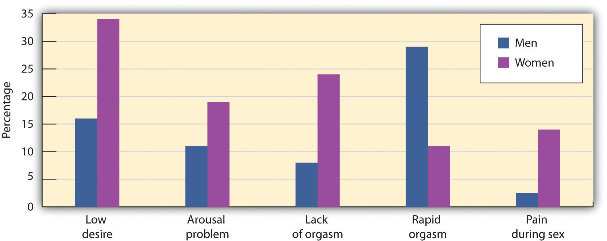

Although mood, anxiety, and personality disorders represent the most prevalent psychological disorders, as you saw in Table 12.3 "Categories of Psychological Disorders Based on the " there are a variety of other disorders that affect people. This complexity of symptoms and classifications helps make it clear how difficult it is to accurately and consistently diagnose and treat psychological disorders. In this section we will review three other disorders that are of interest to psychologists and that affect millions of people: somatoform disorder, factitious disorder, and sexual disorder.
Somatoform and factitious disorders both occur in cases where psychological disorders are related to the experience or expression of physical symptoms. The important difference between them is that in somatoform disorders the physical symptoms are real, whereas in factitious disorders they are not.
One case in which psychological problems create real physical impairments is in the somatoform disorder known as somatization disorder (also called Briquet’s syndrome or Brissaud-Marie syndrome)A psychological disorder in which a person experiences numerous long-lasting but seemingly unrelated physical ailments that have no identifiable physical cause.. Somatization disorder is a psychological disorder in which a person experiences numerous long-lasting but seemingly unrelated physical ailments that have no identifiable physical cause. A person with somatization disorder might complain of joint aches, vomiting, nausea, muscle weakness, as well as sexual dysfunction. The symptoms that result from a somatoform disorder are real and cause distress to the individual, but they are due entirely to psychological factors. The somatoform disorder is more likely to occur when the person is under stress, and it may disappear naturally over time. Somatoform disorder is more common in women than in men, and usually first appears in adolescents or those in their early 20s.
Another type of somatoform disorder is conversion disorderA psychological disorder in which patients experience specific neurological symptoms such as numbness, blindness, or paralysis, but where no neurological explanation exists., a psychological disorder in which patients experience specific neurological symptoms such as numbness, blindness, or paralysis, but where no neurological explanation is observed or possible (Agaki & House, 2001).Akagi, H., & House, A. O. (2001). The epidemiology of hysterical conversion. In P. Halligan, C. Bass, & J. Marshall (Eds.), Hysterical conversion: Clinical and theoretical perspectives (pp. 73–87). Oxford, England: Oxford University Press. The difference between conversion and somatoform disorders is in terms of the location of the physical complaint. In somatoform disorder the malaise is general, whereas in conversion disorder there are one or several specific neurological symptoms.
Conversion disorder gets its name from the idea that the existing psychological disorder is “converted” into the physical symptoms. It was the observation of conversion disorder (then known as “hysteria”) that first led Sigmund Freud to become interested in the psychological aspects of illness in his work with Jean-Martin Charcot. Conversion disorder is not common (a prevalence of less than 1%), but it may in many cases be undiagnosed. Conversion disorder occurs twice or more frequently in women than in men.
There are two somatoform disorders that involve preoccupations. We have seen an example of one of them, body dysmorphic disorder, in the Chapter 12 "Defining Psychological Disorders" opener. Body dysmorphic disorder (BDD) is a psychological disorder accompanied by an imagined or exaggerated defect in body parts or body odor. There are no sex differences in prevalence, but men are most often obsessed with their body build, their genitals, and hair loss, whereas women are more often obsessed with their breasts and body shape. BDD usually begins in adolescence.
Hypochondriasis (hypochondria)A psychological disorder accompanied by excessive worry about having a serious illness. is another psychological disorder that is focused on preoccupation, accompanied by excessive worry about having a serious illness. The patient often misinterprets normal body symptoms such as coughing, perspiring, headaches, or a rapid heartbeat as signs of serious illness, and the patient’s concerns remain even after he or she has been medically evaluated and assured that the health concerns are unfounded. Many people with hypochondriasis focus on a particular symptom such as stomach problems or heart palpitations.
Two other psychological disorders relate to the experience of physical problems that are not real. Patients with factitious disorderA psychological disorder in which participants fake physical symptoms in large part because they enjoy the attention and treatment that they receive in the hospital. fake physical symptoms in large part because they enjoy the attention and treatment that they receive in the hospital. They may lie about symptoms, alter diagnostic tests such as urine samples to mimic disease, or even injure themselves to bring on more symptoms. In the more severe form of factitious disorder known as Münchausen syndrome, the patient has a lifelong pattern of a series of successive hospitalizations for faked symptoms.
Factitious disorder is distinguished from another related disorder known as malingering, which also involves fabricating the symptoms of mental or physical disorders, but where the motivation for doing so is to gain financial reward; to avoid school, work, or military service; to obtain drugs; or to avoid prosecution.
The somatoform disorders are almost always comorbid with other psychological disorders, including anxiety and depression and dissociative states (Smith et al., 2005).Smith, R. C., Gardiner, J. C., Lyles, J. S., Sirbu, C., Dwamena, F. C., Hodges, A.,…Goddeeris, J. (2005). Exploration of DSM-IV criteria in primary care patients with medically unexplained symptoms. Psychosomatic Medicine, 67(1), 123–129. People with BDD, for instance, are often unable to leave their house, are severely depressed or anxious, and may also suffer from other personality disorders.
Somatoform and factitious disorders are problematic not only for the patient, but they also have societal costs. People with these disorders frequently follow through with potentially dangerous medical tests and are at risk for drug addiction from the drugs they are given and for injury from the complications of the operations they submit to (Bass, Peveler, & House, 2001; Looper & Kirmayer, 2002).Bass, C., Peveler, R., & House, A. (2001). Somatoform disorders: Severe psychiatric illnesses neglected by psychiatrists. British Journal of Psychiatry, 179, 11–14; Looper, K. J., & Kirmayer, L. J. (2002). Behavioral medicine approaches to somatoform disorders. Journal of Consulting and Clinical Psychology, 70(3), 810–827. In addition, people with these disorders may take up hospital space that is needed for people who are really ill. To help combat these costs, emergency room and hospital workers use a variety of tests for detecting these disorders.
Sexual disorders refer to a variety of problems revolving around performing or enjoying sex. These include disorders related to sexual function, gender identity, and sexual preference.
Sexual dysfunctionA psychological disorder that occurs when the physical sexual response cycle is inadequate for reproduction or for sexual enjoyment. is a psychological disorder that occurs when the physical sexual response cycle is inadequate for reproduction or for sexual enjoyment. There are a variety of potential problems (Table 12.7 "Sexual Dysfunctions as Described in the "), and their nature varies for men and women (Figure 12.17 "Prevalence of Sexual Dysfunction in Men and Women"). Sexual disorders affect up to 43% of women and 31% of men (Laumann, Paik, & Rosen, 1999).Laumann, E. O., Paik, A., Rosen, R. (1999). Sexual dysfunction in the United States. Journal of the American Medical Association, 281(6), 537–544. Sexual disorders are often difficult to diagnose because in many cases the dysfunction occurs at the partner level (one or both of the partners are disappointed with the sexual experience) rather than at the individual level.
Table 12.7 Sexual Dysfunctions as Described in the DSM
| Disorder | Description |
|---|---|
| Hypoactive sexual desire disorder | Persistently or recurrently deficient (or absent) sexual fantasies and desire for sexual activity |
| Sexual aversion disorder | Persistent or recurrent extreme aversion to, and avoidance of, all (or almost all) genital sexual contact with a sexual partner |
| Female sexual arousal disorder | Persistent or recurrent inability to attain, or to maintain until completion of the sexual activity, an adequate lubrication-swelling response of sexual excitement |
| Male erectile disorder | Persistent or recurrent inability to attain or maintain an adequate erection until completion of the sexual activity |
| Female orgasmic disorder | Persistent or recurrent delay in, or absence of, orgasm following a normal sexual excitement phase |
| Male orgasmic disorder | Persistent or recurrent delay in, or absence of, orgasm following a normal sexual excitement phase during sexual activity |
| Premature ejaculation | Persistent or recurrent ejaculation with minimal sexual stimulation before, on, or shortly after penetration and before the person wishes it |
| Dyspareunia | Recurrent or persistent genital pain associated with sexual intercourse in either a male or a female |
| Vaginismus | Recurrent or persistent involuntary spasm of the musculature of the outer third of the vagina that interferes with sexual intercourse |
Source: American Psychiatric Association. (2000). Diagnostic and statistical manual of mental disorders (4th ed., text rev.). Washington, DC: Author.
Figure 12.17 Prevalence of Sexual Dysfunction in Men and Women
This chart shows the percentage of respondents who reported each type of sexual difficulty over the previous 12 months.
Source: Adapted from Laumann, E. O., Paik, A., & Rosen, R. C. (1999). Sexual dysfunction in the United States: Prevalence and predictors. Journal of the American Medical Association, 281(6), 537–544.
Hypoactive sexual desire disorder, one of the most common sexual dysfunctions, refers to a persistently low or nonexistent sexual desire. How “low sexual desire” is defined, however, is problematic because it depends on the person’s sex and age, on cultural norms, as well as on the relative desires of the individual and the partner. Again, the importance of dysfunction and distress is critical. If neither partner is much interested in sex, for instance, the lack of interest may not cause a problem. Hypoactive sexual desire disorder is often comorbid with other psychological disorders, including mood disorders and problems with sexual arousal or sexual pain (Donahey & Carroll, 1993).Donahey, K. M., & Carroll, R. A. (1993). Gender differences in factors associated with hypoactive sexual desire. Journal of Sex & Marital Therapy, 19(1), 25–40.
Sexual aversion disorder refers to an avoidance of sexual behavior caused by disgust or aversion to genital contact. The aversion may be a phobic reaction to an early sexual experience or sexual abuse, a misattribution of negative emotions to sex that are actually caused by something else, or a reaction to a sexual problem such as erectile dysfunction (Kingsberg & Janata, 2003).Kingsberg, S. A., & Janata, J. W. (2003). The sexual aversions. In S. B. Levine, C. B. Risen, & S. E. Althof (Eds.), Handbook of clinical sexuality for mental health professionals (pp. 153–165). New York, NY: Brunner-Routledge.
Female sexual arousal disorder refers to persistent difficulties becoming sexually aroused or sufficiently lubricated in response to sexual stimulation in women. The disorder may be comorbid with hypoactive sexual desire or orgasmic disorder, or mood or anxiety disorders.
Male erectile disorder (sometimes referred to as “impotence”) refers to persistent and dysfunctional difficulty in achieving or maintaining an erection sufficient to complete sexual activity. Prevalence rates vary by age, from about 6% of college-aged males to 35% of men in their 70s. About half the men aged 40 to 70 report having problems getting or maintaining an erection “now and then.”
Most erectile dysfunction occurs as a result of physiological factors, including illness, and the use of medications, alcohol, or other recreational drugs. Erectile dysfunction is also related to anxiety, low self-esteem, and general problems in the particular relationship. Assessment for physiological causes of erectile dysfunction is made using a test in which a device is attached to the man’s penis before he goes to sleep. During the night the man may have an erection, and if he does the device records its occurrence. If the man has erections while sleeping, this provides assurance that the problem is not physiological.
One of the most common sexual dysfunctions in men is premature ejaculation. It is not possible to exactly specify what defines “premature,” but if the man ejaculates before or immediately upon insertion of the penis into the vagina, most clinicians will identify the response as premature. Most men diagnosed with premature ejaculation ejaculate within one minute after insertion (Waldinger, 2003).Waldinger, M. D. (2003). Rapid ejaculation. In S. B. Levine, C. B. Risen, & S. E. Althof (Eds.), Handbook of clinical sexuality for mental health professionals (pp. 257–274). New York, NY: Brunner-Routledge. Premature ejaculation is one of the most prevalent sexual disorders and causes much anxiety in many men.
Female orgasmic disorder refers to the inability to obtain orgasm in women. The woman enjoys sex and foreplay and shows normal signs of sexual arousal but cannot reach the peak experience of orgasm. Male orgasmic disorder includes a delayed or retarded ejaculation (very rare) or (more commonly) premature ejaculation.
Finally, dyspareunia and vaginismus refer to sexual pain disorders that create pain and involuntary spasms, respectively, in women, and thus make it painful to have sex. In most cases these problems are biological and can be treated with hormones, creams, or surgery.
Sexual dysfunctions have a variety of causes. In some cases the primary problem is biological, and the disorder may be treated with medication. Other causes include a repressive upbringing in which the parents have taught the person that sex is dirty or sinful, or the experience of sexual abuse (Beitchman, Zucker, Hood, & DaCosta, 1992).Beitchman, J. H., Zucker, K. J., Hood, J. E., & DaCosta, G. A. (1992). A review of the long-term effects of child sexual abuse. Child Abuse & Neglect, 16(1), 101–118. In some cases the sex problem may be due to the fact that the person has a different sexual orientation than he or she is engaging in. Other problems include poor communication between the partners, a lack of sexual skills, and (particularly for men) performance anxiety.
It is important to remember that most sexual disorders are temporary—they are experienced for a period of time, in certain situations or with certain partners, and then (without, or if necessary with, the help of therapy) go away. It is also important to remember that there are a wide variety of sex acts that are enjoyable. Couples with happy sex lives work together to find ways that work best for their own styles. Sexual problems often develop when the partners do not communicate well with each other, and are reduced when they do.
Gender identityIdentification with a sex. refers to the identification with a sex. Most children develop an appropriate attachment to their own sex. In some cases, however, children or adolescents—sometimes even those as young as 3 or 4 years old—believe that they have been trapped in a body of the wrong sex. Gender identity disorder (GID, or transsexualism)A psychological disorder in which the individual displays a repeated and strong desire to be the other sex, a persistent discomfort with one’s sex, and a belief that one was born the wrong sex, accompanied by significant dysfunction and distress. is diagnosed when the individual displays a repeated and strong desire to be the other sex, a persistent discomfort with one’s sex, and a belief that one was born the wrong sex, accompanied by significant dysfunction and distress. GID usually appears in adolescence or adulthood and may intensify over time (Bower, 2001).Bower, H. (2001). The gender identity disorder in the DSM-IV classification: A critical evaluation. Australian and New Zealand Journal of Psychiatry, 35(1), 1–8. Since many cultures strongly disapprove of cross-gender behavior, it often results in significant problems for affected persons and those in close relationships with them.
Gender identity disorder is rare, occurring only in about 1 in every 12,000 males and 1 in every 30,000 females (Olsson & Möller, 2003).Olsson, S.-E., & Möller, A. R. (2003). On the incidence and sex ratio of transsexualism in Sweden, 1972–2002. Archives of Sexual Behavior, 32(4), 381–386. The causes of GID are as of yet unknown, although they seem to be related in part to the amount of testosterone and other hormones in the uterus (Kraemer, Noll, Delsignore, Milos, Schnyder, & Hepp, 2009).Kraemer, B., Noll, T., Delsignore, A., Milos, G., Schnyder, U., & Hepp, U. (2009). Finger length ratio (2D:4D) in adults with gender identity disorder. Archives of Sexual Behavior, 38(3), 359–363.
The classification of GID as a mental disorder has been challenged because people who suffer from GID do not regard their own cross-gender feelings and behaviors as a disorder and do not feel that they are distressed or dysfunctional. People suffering from GID often argue that a “normal” gender identity may not necessarily involve an identification with one’s own biological sex. GID represents another example, then, of how culture defines disorder, and the next edition of the DSM may change the categorizations used in this domain accordingly.
A third class of sexual disorders relates to sexual practices and interest. In some cases sexual interest is so unusual that it is known as a paraphiliaA psychological disorder in which sexual arousal is obtained from a consistent pattern of inappropriate responses to objects or people, and in which the behaviors associated with the feelings are distressing and dysfunctional.—a sexual deviation where sexual arousal is obtained from a consistent pattern of inappropriate responses to objects or people, and in which the behaviors associated with the feelings are distressing and dysfunctional. Paraphilias may sometimes be only fantasies, and in other cases may result in actual sexual behavior (Table 12.8 "Some Paraphilias").
Table 12.8 Some Paraphilias
| Paraphilia | Behavior or fantasy that creates arousal |
|---|---|
| Bestiality | Sex with animals |
| Exhibitionism | Exposing genitals to an unsuspecting person |
| Fetishism | Nonliving or unusual objects or clothing of the opposite sex |
| Frotteurism | Rubbing up against unsuspecting persons |
| Masochism | Being beaten, humiliated, bound, or otherwise made to suffer |
| Pedophilia | Sexual activity with a prepubescent child |
| Sadism | Witnessing suffering of another person |
| Voyeurism | Observing an unsuspecting person who is naked, disrobing, or engaged in intimate behavior |
People with paraphilias are usually rejected by society but for two different reasons. In some cases, such as voyeurism and pedophilia, the behavior is unacceptable (and illegal) because it involves a lack of consent on the part of the recipient of the sexual advance. But other paraphilias are rejected simply because they are unusual, even though they are consensual and do not cause distress or dysfunction to the partners. Sexual sadism and sexual masochism, for instance, are usually practiced consensually, and thus may not be harmful to the partners or to society. A recent survey found that individuals who engage in sadism and masochism are as psychologically healthy as those who do not (Connolly, 2006).Connolly, P. (2006). Psychological functioning of bondage/domination/sado-masochism (BDSM) practitioners. Journal of Psychology & Human Sexuality, 18(1), 79–120. doi:10.1300/j056v18n01_05 Again, as cultural norms about the appropriateness of behaviors change, the new revision of the DSM, due in 2013, will likely change its classification system of these behaviors.